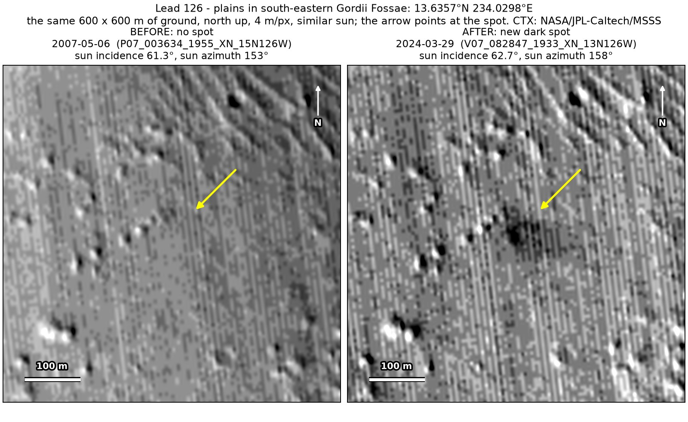
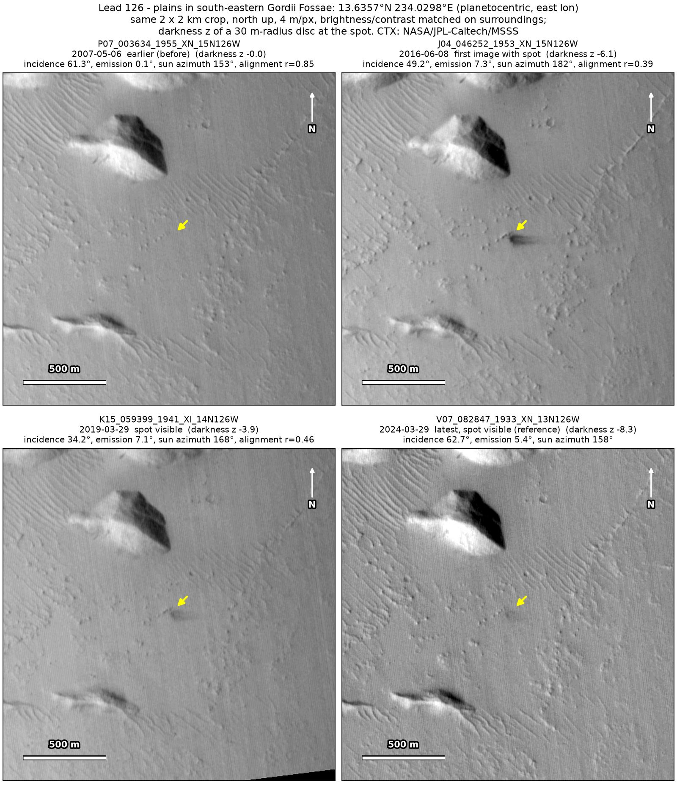
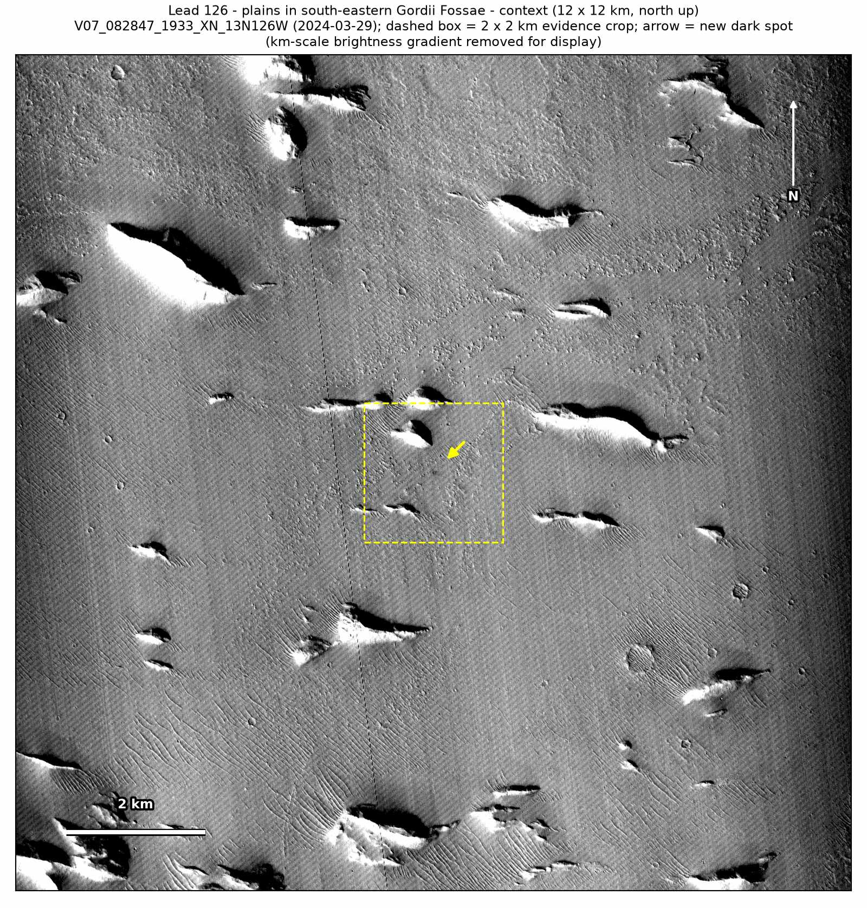

Professor of Mathematics
Paata Ivanisvili
Department of Mathematics, University of California, Irvine

← Possible new impact sites on Mars
Candidate 126: Plains in south-eastern Gordii Fossae
Strong · roughly 75%

What changed. A dark spot with a head about 60 m across and a tail about 140 m long to the east appeared on plains in south-eastern Gordii Fossae between May 2007 and June 2016 and is still there, fading, in March 2024, in three CTX images from three orbits.
Why it may be a new impact. The only earlier image, from 2007, taken under almost the same sun as the March 2024 image, shows plain ground there, and once the broad background is removed, the aligned before-and-after difference shows the spot as the only compact darkening on open ground. A dark spot with a short tail appearing on open plain, away from a knob and a ridge nearby, fits the blast zone of a small new impact.
- Location
- 13.636° N, 234.030° E (125.970° W)
- Absent
- 6 May 2007
- Present
- 8 June 2016, 29 March 2019 and 29 March 2024
- Size
- Dark spot with a head about 60 m across and a tail about 140 m long to the east (196 × 96 m in the June 2016 image), fading to a core of 38 × 46 m in the March 2024 image
- Confidence
- Strong candidate; roughly 75% that it is a new impact.
- Caveat
- The spot is faint and fading, no dark feature nearby could test whether the 2007 image would have shown one, and the aligned before-and-after difference at the spot is weak, so it is rated about 75% rather than 90%. It lies outside every footprint of the high-resolution HiRISE camera; the nearest ends 17.2 km away. Like every candidate here, it is unconfirmed: see the caveat.

